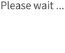

<div class=" main wrrpperRegisterForm successs profilePhoto imges_wrpper casting_inner">
        <div class="mainHeader">
            <div class="top_header">
                <div class="arrowLeft" [routerLink]="['/home']">
                    <ion-icon name="chevron-back-outline"></ion-icon>
                </div>
                <div class="logo middle">
                    <label>Images</label>
                </div>
                <div class="lats_side">
                    <div class="avtars">
                        <a [routerLink]="['/home']">
                            <!--  -->
                            <ion-icon name="home-outline"></ion-icon>
                        </a>
                        <!-- </div> -->
                    </div>
                </div>
            </div>
        </div>  
        <form [formGroup]="form">
            <div class="imgContent">
                <div class="imgPrevw img_Prevw">
                    <div class="prvwImg" *ngFor="let img of datas;let i=index;">
                        
                        <div class='multi-field'>
                            <button type="button" class="close" (click)="removePrimaryImage(i)">
                                <i class="far fa-times-circle"></i>
                            </button>
                        </div>
                        <div class="edit_btn">
                            <a><i class="far fa-edit"></i></a>
                        </div>
                    </div>
                    <div class="prvwImg" *ngFor='let url of cropimages; let j=index;'>
                        
                        <div class='multi-field'>
                            <button type="button" class="close" (click)="removeSelectedImages(j)">
                                <i class="far fa-times-circle"></i>
                            </button>
                        </div>
                    </div>
                    
                    
                </div>
                <div *ngIf="imgArray.length < 3 || imgArray == 'No Record Found' ">
                <div class="imgs">
                    <input type="file" name="files[]" id="files" (change)="fileChangeEvent($event)" multiple accept="image/jpeg, image/png, image/jpg,">
                    
                </div>
                <div class="ctnt">
                    <p>Take a Photo or choose From <br>your library</p>
                    <span>(You can add only 3 Photos)</span>
                </div>
                </div>
            </div>
            <div class="btnArea">
                <a (click)="submit()" type="button" [attr.disabled] = "active === 1 ? 'disabled' : null" class="next">Save</a>
                <button  (click)="back()" class="next outline">Cancel</button>
            </div>
        </form>
    <div *ngIf="uploading" class="loader">
        
        
    </div>
    </div>
    <div class="backdrop" [ngStyle]="{'display':display}"></div>
                  
        <div class="modal" tabindex="-1" role="dialog"  [ngStyle]="{'display':display}">
            <div class="modal-dialog" role="document">
                <div class="modal-content">
                    <div class="modal-header">
                        <h4 class="modal-title">Image Cropper</h4>
                        <!-- <button type="button" class="close" aria-label="Close" (click)="onCloseHandled()"><span aria-hidden="true">&times;</span></button> -->
                    </div>
                    <div class="modal-body">
                        <image-cropper [imageChangedEvent]="imageChangedEvent"
                                        [maintainAspectRatio]="true"
                                        [aspectRatio]="4 / 3"
                                        [resizeToWidth]="500"
                                        format="png"
                                        (imageCropped)="imageCropped($event)"
                                        (imageLoaded)="imageLoaded()"
                                        (cropperReady)="cropperReady()"
                                        (loadImageFailed)="loadImageFailed()" style="max-height:500px">
                       </image-cropper>
                    </div>
                    <div class="modal-footer">
                        <button type="button" class="btn btn-default" (click)="SaveCropedImage()">Save</button>
                        <button type="button" class="btn btn-default" (click)="onCloseHandled()">Close</button>
                    </div>
                </div>
            </div>

            <div *ngIf="!loading" class="loader"></div>

        </div> 


